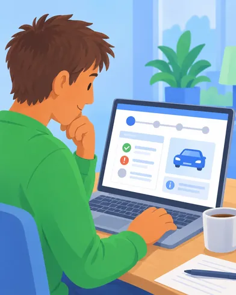
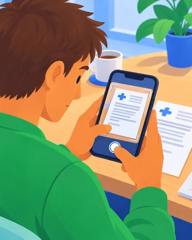
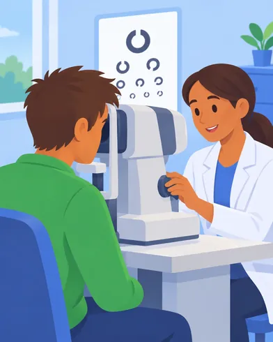
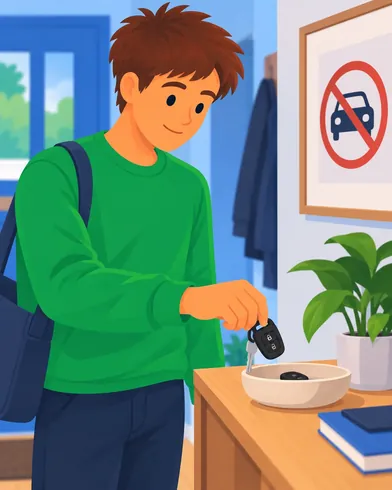

Drive with a medical condition
Drivers Medical: target state, customer experience
Working draft. High-level, whole-service view. Channels and sequencing still to be tested.
Key: who does the task
Customer does it
With an agent
DVLA contacts you
Third party
tbcStage or task scope not yet agreed
No epic yetTask not covered by an epic
StageCustomer actionService provision
Service outcomes
Channels and services
Customer objective
Steps
Taskstagged with their epic
Behind the scenes
01
Find out
Inform
People with a medical condition know whether they need to tell DVLA, how to do it, and whether they can keep driving meanwhile.
GOV.UK
“I need to know if my condition affects my licence.”
Check if you need to tell DVLA
Check your condition
Look up the condition on GOV.UK and see whether it must be declared.
Epic: Customers understand when and why they need to engage with Drivers Medical
Get advice from your doctor
GP, consultant or optician advises whether to tell DVLA.
Epic: Customers understand when and why they need to engage with Drivers Medical
GOV.UK
“I want to know what will happen and how long it takes.”
Understand what happens next
See the process
What DVLA will ask for, typical timescales, and how you will be kept informed.
Epic: Customers understand when and why they need to engage with Drivers Medical
Check if you can keep driving
Understand when you can drive while DVLA decides.
Epic: Customers understand when and why they need to engage with Drivers Medical
Guidance written with DM policy, so what customers read matches how cases are decided.
02
Tell us
Notify
People tell DVLA once, in the channel that suits them, and their case goes straight to the right route.
GOV.UK
DMSP
“I want to tell DVLA online and get it done.”
Tell DVLA online
Prove who you are
Sign in with GOV.UK One Login. If it fails, get help without starting again.
Epic: Customers understand when and why they need to engage with Drivers Medical
Tell us about all your conditions
Report every condition in one journey, rather than one notification each.
Epic: Multiple conditions can be managed through a single service journey
Complete the notification
D1 and medical questionnaire, or D1 only.
Epic: Customers understand when and why they need to engage with Drivers Medical
Phone and webchat
“I'd rather tell someone and have them help me.”
Tell DVLA with help
Notify by phone
The IVR routes the call to an agent who completes the notification with you.
Epic: Customers understand when and why they need to engage with Drivers Medical
Notify by webchat
An agent completes the notification over webchat.
Epic: Customers understand when and why they need to engage with Drivers Medical
Notify by post
Send a paper D1. Paper forms ask what DMSP asks, including your licence number.
Epic: Teams have access to the information they need to support customers
GOV.UK
Phone and webchat
“I'm telling you on behalf of someone else.”
Notify for someone else
Representative notifiestbc
A family member or carer with authority to act notifies for the driver. Consent and account access still to be worked out.
Epic: Customers understand when and why they need to engage with Drivers Medical
Third party notifies
A doctor or the police tell DVLA about a driver.
Epic: Customers understand when and why they need to engage with Drivers Medical
GOV.UK Notify
“I want to know you've got it.”
Get confirmation
Case received
SMS, email or letter confirms the case has arrived, paper included, and what happens next.
Epic: Customers receive timely and relevant communications
When to expect an update
When we will usually be in touch for cases like yours, and why.
Epic: Customers can see the progress of their case
Every channel lands in one intake, paper included. Case classified by risk archetype and routed to a pathway.
03
Stay informed
Update
Customers always know where their case is, what happens next, and whether they can drive.
GOV.UK Notify
“I want to hear from you when something changes.”
Get told when your case moves
Case in progress
Someone is working on your case.
Epic: Customers receive timely and relevant communications
Waiting on someone else
Who we have asked for evidence, and when.
Epic: Customers receive timely and relevant communications
Information received
The evidence or result has arrived and your case is moving again.
Epic: Customers receive timely and relevant communications
GOV.UK Notify
“Tell me straight away if you need something from me.”
Get told when you need to act
Action required
What we need, why, how to send it, and by when.
Epic: Customers can see the progress of their case
Customer account
DMSP

“I need to know if I can drive right now.”
See your case
Check status
Current stage, next step and expected timescale.
Epic: Customers can see the progress of their case
See what's outstanding
Actions, evidence or consent still needed.
Epic: Customers can see the progress of their case
See your appointments
Appointment details, reminders and any changes.
Epic: Customers can see the progress of their case
Check if you can drive
A plain answer to whether you can drive today.
No epic yet
Status changes in Dynamics trigger messages automatically.
04
Provide what's needed
Gather evidence
DVLA gets the evidence it needs to decide, asked for once, and only when it will change the decision.
Phone and webchat
GOV.UK Notify
“Tell me exactly what you need and I'll send it.”
Get a request
Written request
SMS, email or letter, each with a choice of how to respond.
Epic: Customers receive timely and relevant communications
Call from an agent
An agent calls to ask for what is needed. Identity checked over the phone.
Epic: Customers receive timely and relevant communications
DMSP
Phone and webchat

“I want to send it the easiest way for me.”
Send what's asked for
Upload evidence
Send letters, results or reports through DMSP, in the format you have them.
Epic: Customers can provide evidence digitally
Complete a medical questionnaire
Online or on paper. Both ask the same questions.
Epic: Customers can provide evidence digitally
Complete the D202 or D203
Online or by post. The paper route stays.
Epic: Customers can provide evidence digitally
Give consent
Online or on paper, without the paper form changing what you agree to.
Epic: Customers receive timely and relevant communications
Give it to an agent
Information, evidence or consent by phone or webchat.
Epic: Customers can provide evidence digitally
Opticians
Examiners

“I need to go to an appointment.”
Attend an appointment (tbc)
Book an appointment
Book an eyesight test or medical examination with an approved supplier or doctor near you.
Epic: Customers can book appointments with HCPs
Attend an examination or test
Go to the appointment. The result goes straight to DVLA.
Epic: Customers can book appointments with HCPs
GPs
Consultants
“I need to know what DVLA wants and send it quickly.”
Clinician provides evidence
Receive a request
A clear, specific request in the clinician's preferred channel.
Epic: Making it easier and faster to share medical information between DVLA, GPs and customers
Respond online
Complete the report online, D4 and VOC45 included, matched to the case. Chased if it does not arrive.
Epic: Making it easier and faster to share medical information between DVLA, GPs and customers
Share patient recordstbc
With the customer's consent, relevant records shared directly rather than summarised by hand.
Epic: Making it easier and faster to share medical information between DVLA, GPs and customers
Evidence requested only where it changes the decision. Third parties chased when it is late.
05
Get help
Support
When customers get in touch, they reach someone who knows their case and can resolve it.
Phone and webchat
“When I call, I want to speak to someone who knows my case.”
Get in touch
Phone
The IVR recognises your case, so you don't have to explain it again.
Epic: Teams have access to the information they need to support customers
Webchat
Chat with someone who can see your case.
Epic: Teams have access to the information they need to support customers
Phone and webchat
“If nobody's free, I want you to call me back.”
Get a call back
Request a call back
Choose a time, in hours.
No epic yet
Out of hours
Triage, then leave a message or book a call back.
No epic yet
Calls and chats arrive with the case already on screen.
06
Get a decision
Decide
People safe to drive keep driving. People who aren't stop, and understand why.
DVLA
GOV.UK Notify
“I need a clear decision.”
Receive a decision
Licence issued
Full licence issued.
No epic yet
Short-term licence issued
With the review date and what will be asked for next time.
No epic yet
Licence kept
Renewal confirmed, no change.
No epic yet
Licence refused or revoked
With the reasons and what you can do next.
No epic yet
DVLA
“I want to understand how the decision was made.”
Understand the decision
See the reasons
What evidence was used and why.
No epic yet
Case closed
Confirmation nothing more is needed.
Epic: Customers receive timely and relevant communications
GOV.UK

“I need to stop driving.”
Surrender your licence
Surrender voluntarily
Online or by post. Know how to get your licence back later.
Epic: Customers can manage their licence through a joined-up service
Decisions supported by risk and operational insight.
07
Challenge
Reconsider
People who disagree can have a decision looked at again, quickly and fairly.
DVLA

“I think the decision is wrong.”
Challenge the decision
Ask DVLA to reconsider
Explain why the decision should change.
Epic: Customers can challenge decisions fairly and transparently
Send further evidence
New evidence reopens the case.
Epic: Customers can challenge decisions fairly and transparently
Courts
[Illustration]
“I want an independent decision.”
Appeal
Appeal to court
Magistrates' court in England and Wales, sheriff court in Scotland.
Epic: Customers can challenge decisions fairly and transparently
[tbc]
08
Renewtbc
Review
People on a medical licence renew with effort proportionate to their risk.
GOV.UK Notify
“Remind me before my licence runs out.”
Get a renewal reminder
Reminder
Sent in time to renew without a gap.
Epic: Customers can manage their licence through a joined-up service
DMSP
Phone and webchat
“I don't want to start from scratch every time.”
Renew
Confirm nothing has changedtbc
For stable conditions, renew by telling us nothing has changed. Depends on policy.
Epic: Customers can manage their licence through a joined-up service
Renew your way
Online, by post or with an agent, starting from what we already know rather than from scratch.
Epic: Customers can manage their licence through a joined-up service
New medical evidence
Only when the route requires it.
Epic: Customers can provide evidence digitally
Renewal route set by risk archetype.
09
Tell us about a changetbc
Reassess
Changes in health reach DVLA and trigger the right level of review.
DMSP
Phone and webchat
“My health has changed and I need to tell you.”
Report a change
New condition
Added to what we already know, not started from scratch.
Epic: Multiple conditions can be managed through a single service journey
Condition has changed
Tell DVLA it has got better or worse.
Epic: Customers can manage their licence through a joined-up service
Pause or resume your licencetbc
Stop driving for a while, then resume on self-declaration where policy allows.
Epic: Customers can manage their licence through a joined-up service
A change re-triggers routing.
∞
Whole servicetbc
Assist
Anyone using the service can get help or complain, whatever stage they are at.
DVLA
“I'm unhappy with how I've been treated.”
Make a complaint
Complain
Through the DVLA complaints process.
No epic yet
[tbc]